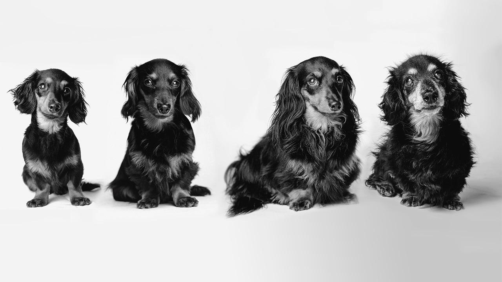

Jimmy
Brugge
Watson
Jimmy - Shepherd Mix, 5 years old - He is very active and loves long walks. He think he is the biggest dog in the entire world and would wrestle with any dog that wants to play. He loves dogs parks and snow the most.
Brugge - German Shepherd, 4 years old - He is very protective of his brothers and humans. He thinks he is a lap dog. He is seme-active and would play fetch any day of the week. He loves to play fetch and his brother Jimmy the most.
Watson - Total Mutt, 3 years old - He is the cat of the pack. He would sleep and eat all day if he could. He is not a big fan of long walks. However, he loves food and head rubs the most.
Training our dogs as soon as we get them was vital not only for us but also for the dogs' growth. Here is a great video that taight us how to train any dog the basics.
As important as training is for the dogs, it is also pertinent to feed them the right food. Before making any decisions, we consulted our vet. It is recommended that grain free and high in protein ingredients are better for the dogs. To see our dogs live happily and healthy, we did not take this step lightly. Here is the list of the top ten grain free dog foods.
Picking the right Vet for your dogs are another important step in dog care. Prior to taking the dogs to a new vet, we read reviews and make introductory appointments to see how we like them. A vet that goes above and beyond that truly care for our dogs' well being is hard to find but vital to this journey. For this reason, we start simply searching on Google for "Good vets near me".
Aging is dependent on the dog's size. Typicall, dogs are grouped by height and general size, not in weght when we discuss aging. Shorter and smaller looking dogs, tend to live longer. However, larger and taller dogs tend to mature faster. Given this background, give and take most dogs between ages 1-3 years old are considered puppies. From 3-5, they are considered to be in their teens. From ages 6 to 8, they are considered as adults. From 9 to their lifetime, they are considered to be geriatric. As they age, they will slow down, they become slower to learn new tricks and will prefer naps over walks. Having a dog is a lifetime (dog's) commitment that requires tender care and commintment. They tend to give more joy than they take. Finally, it is common for humans to try to compare their age to ours. Here you can learn more on how to calculate your dog's age compared to human's.
Made by P.G.S. at One Month